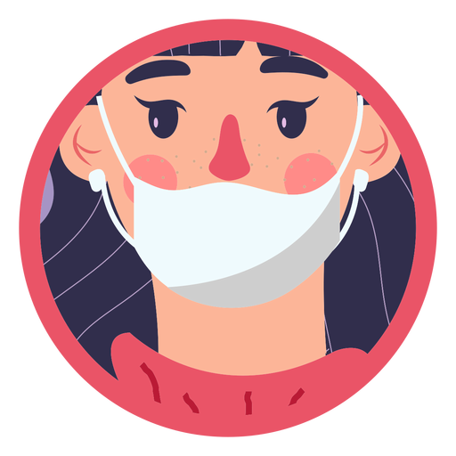

|

|
Q U A R E N T E N A |
Qual é o valor de ser livre? Quanto vale a sua liberdade? Nessa época a raça humana enfrenta uma das maiores pandemias da historia, fazendo com que grande parte da população mundial fique "trancado" dentro de casa!
É... o tal do coronavirus colocou o mundo de "castigo", tendo que "se virar" em suas atividades diárias. Sendo assim o meu professor de Web Design lançou um desafio para a gente, criar um site contando o que se passa no meu isolamento social.
Sim, não é tão facil ficar "trancado" dentro de casa, mas eu dou o meu jeito de me divertir, Seja assistindo séries, filmes... quanto jogando, eu procuro a melhor forma para me dedicar neste momento.
Por fim, farei um pequeno resumo de minhas atividades diárias nesta quarentena.
Nada melhor para passar o tempo do que assistir filme ou série, além de ajudar no entreterimento os filmes trazem consigo grandes beneficios... a conscientizão é um desses beneficios, um filme traz consigo uma nova visão, que se usada de uma boa forma pode informar e conscientizar a populção!
É uma das coisas que eu mais faço, amo assistir filmes! Neste tempo ja assistir mais de 30 filmes e séries, realmente é uma paixão que me faz relaxar e passar o tempo.
Mesmo sem poder gravar filmes, a Netflix, esta fazendo alguns lançamentos que conquistaram as pessoas, sejam os veteranos ou os jovem. Com alguns lançamentos íncriveis, eu posso te recomendar alguns para assistir, "365 DIAS" tras uma sinopse espetacular sobre um casal de amantes; tem tambem o filme que já é queridinho da "galera", estou falando do filme "A Barraca do Beijo 2, trazendo a contimuação sobre a historia de amor de Noah e Elle.
E para os amantes de "Greys Anatomy", a produção afirmou que o periodo de pandemia será relatado na clássica série!
Aahh... os jogos... apesar de me estressarem, um pouco, neste isolamento eu continuo a me interagir com este mundo de competições e vitórias.
E um dos principais protagonistas da minha lista de jogos é o Free Fire. Free Fire ou FF, como é conhecido pela garotada, é um jogo de ataque e sobrevivência vence o ultimo a estar vivo.
É um pouco viciante, confesso, mas eu consigo manter o controle da situação. O pessoal diz que é jogo de gado, dependendo do significado de gado eu acho q meus chifres estão enormes!
Pois é... mais do que nunca, as redes socias neste periodo estão pegando fogo! E como eu sou um louco amante dessas redes, é claro que não poderia falta-lás nesta lista.
Começando pela "modinha" da quarentena que é gravar "Tik-Tok". É... eu não vou negar, também entrei nessa moda com minha tia, juntos conseguimos mais de 11 mil visualizações, ela adora rsrs!
Não posso deixar de fora desta lista as grandes famosas marcas, como Facebook, Instagram e WhatsApp, que são minhas grandes favoritas. Passo grande parte do dia no "insta" e no "whats", converso com amigos, troco informações, memes; fico atualizado das noticias e mantenho foco em relaxar.
Não posso, jamais, para! Tenho um sonho a coquistar. Essa época, utilizei também para me aprimorar, mesmo estando longe da sala de aula eu busquei aprender coisas novas, aprofundando meu conhecimento em novas áreas.
Estou tendo meio que uma "aula online", mas que infelizmente não substitui a velha sala de aula. Os professores mandam revisões e conteúdos, também fazem Web Conferências, para ter uma melhor aproximação com o aluno.
Além dos conteudos escolares, eu iniciei dois cursos, um de Inglês e um de Fisica. Me inscrevi para um curso, sobre as linguagens de formatação de texto, junto com meu amigo Iuri, que é uma ótima pessoa!
A quarentena me trouxe muitas coisas boas, uma nova forma de pensar e de ver as coisas! Eu esqueci de falar, mas eu engordei um pouco "rsrs"!
É claro que não posso esquecer das pessoas que estão todo dia comigo, seja virtualmente ou presencialmente! Tenho sorte de ter uma familia alegre, e de poder compartilhar momentos hilários com eles. Não só minha família, mas amigos incríveis com quem me aproximei mais nessa quarentena.
Por mais de divertida eu espero que a quarentena acabe logo, e que minha rotina volte a ser como antes!